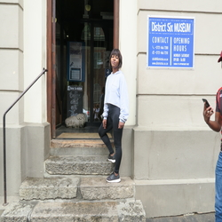

Which City?

Paris
The reason why i chose paris its because of its beauty features.
Paris is considered as the most beautiful place in the world.
The food and wine they serve is just deliciase.
Even though i havent tasted it but i can feel.
Oh and most of all the Eiffel Tower which i can take pictures on it.Paris is called a city of love because of its features.
Foreign Language
| "English Phrase" | "shona phrase" |
|---|---|
| "Hi" | "Hesi" |
| "How are you" | "urisei" |
| "How old are you?" | "unemakore mangani?" |